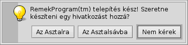
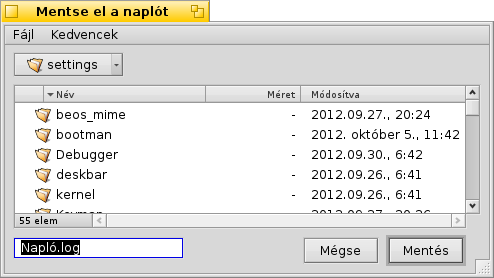
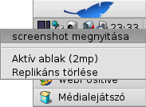

Haiku-specifikus parancssori programok
Haiku-specifikus parancssori programok
| Útvonal: | /boot/system/bin ~/config/bin ~/config/non-packaged/bin/ |
All commandline applications shipped with Haiku are in /boot/system/bin/. Your own or additionally installed commandline apps will appear there as well, or in ~/config/bin/, when installed from a .hpkg package. Otherwise you can put them into /boot/system/non-packaged/bin/ or ~/config/non-packaged/bin/. All these locations are part of the PATH variable and are therefore automatically found.
The following isn't an exhaustive list of all Haiku-specific CLI apps, it serves just to highlight a few of the most useful to give you a taste. Feel encouraged to explore what's in the bin/ folders on your own a bit. Executing an app with the parameter --help shows the usage of the command and all its various options.
 Jellemzőkhöz: listattr, catattr, addattr, rmattr, copyattr
Jellemzőkhöz: listattr, catattr, addattr, rmattr, copyattr
Ezek a parancsok a jellemzők megjelenítésére, kiolvasására, hozzáadására vagy törlésére használhatóak.
Ezek a meta adatok csak BFS fájlrendszerrel rendelkező lemezeken érhetőek el. A fájlok másolása más fájlrendszerre ezen adatok elvesztésével jár!
További információk a Jellemzők a Terminálban című fejezetben.
Indexeléshez: lsindex, mkindex, reindex, rmindex
Ezen parancsok használatával kilistázhatóak, létrehozhatóak és törölhetőek az indexeket.
További információk az Indexek fejezetben.
Relating to package management: package, pkgman
The package command is used to manage HPKG packages. Have a look at the article Installing applications to learn the very basics. Usually the tool haikuporter is used to automatically create packages from so-called recipes.
pkgman is used to search, install, update and uninstall packages. Package repositories can be added, dropped and their package lists refreshed. A special kind of update is invoked with the parameter full-sync: it is more aggressive and also downgrades or removes packages, if necessary.
For more details on a parameter, append "--help", e.g. pkgman search --help
Hasznos parancsok szkriptekhez
Itt található néhány parancssori program, amik kifejezetten szkriptekhez készültek (további információk a Bash és szkriptek fejezetben).
alert | Az alert felkínálja a lehetőséget egy figyelmeztető ablak megjelenítésére egyéni szöveggel, ikonnal és 3 gombbal. Eredmény képpen visszaadja a lenyomott gomb címét és a visszatérési kódot (0-val kezdődően). Példa: alert --idea "RemekProgram(tm) telepítés kész! Szeretne készíteni egy hivatkozást hozzá?" \ "Az Asztalra" "Az Asztalsávba" "Nem kérek"  | |
filepanel | A filepanel lehetőséget nyújt arra, hogy kiválasztjuk egy fájl vagy mappa helyét megnyitás vagy mentés céljából. Az ablak bezárása után megkapjuk a kiválasztott fájl vagy mappa útvonalát. Több paraméter is elérhető, például az induló mappa, az ablak címe, mentés esetén a fájl neve, és az engedélyezett fájltípusok. Példa: filepanel -s -t "Mentse el a naplót" -d ~/config/settings -n Napló.log  | |
hey | A hey egy hasznos kis program, ami segítségével BMessage üzeneteket küldhetünk programoknak, majd megkapjuk a válaszokat is. Ez szkript írásakor lehet hasznos, például egy program "távirányítása" szkriptből vagy parancssorból. A használata egy kicsit összetett... Köszönhetően Scot Hacker BeOS Bible könyvének, kapunk egy kis hey leírást, melyet Chris Herborth készített. | |
notify | notify shows a notification panel with a message. There are various parameters that are described when you call notify --help. A notification can also be used to show the progress of some action. When doing that, it's important to set a messageID and always use it when you update the progress (a float between 0.0 and 1.0 that's printed as percent). Otherwise you'll see several notification panels if you update quicker then the set timeout. notify --type progress --group "--group" --title "--title" --icon /boot/home/bebook.hvif \ --messageID MyMessageID --progress .75 "Keep waiting"
| |
query | A query a kereső panel parancssori megfelelője. A leggyorsabb módja a kereső feltételeknek a generálására az, ha a kereső panelben a készítjük el a keresési szabályt, majd azt dupla idézőjel (") közé rakva bemásoljuk a query parancs után paraméternek a Terminálba vagy a szkriptbe. | |
waitfor | A waitfor egy hasznos kis program, aminek segítségével várhatunk egy program elindításáig, vagy bezárásig. |

További parancsok
checkfs | A checkfs egy fontos program, ami a fájlrendszer hibáit ellenőrzi. Egyszerűen csak adjuk meg a lemez nevét, például /Haiku és az összes fájlt le fogja ellenőrizni. | |
desklink | A desklink lehetőséget ad arra, hogy bármilyen fájlt, mappát, lekérdezést vagy programot az Asztalsávra, a Polcra helyezzünk. Továbbá lehetőségünk van helyi menüvel is ellátni azt. Az alábbi példa a screenshot programot használja néhány opcióval (a "\" az első sor végén a sortörést jelzi a Terminálban): desklink "cmd=Aktív ablak (2mp):/bin/screenshot --window --border --delay 2" \ "cmd=Replikáns törlése:desklink --remove=screenshot" /bin/screenshot  | |
diskimage | A diskimage lehetővé teszi, hogy egy fájlt lemezként regisztráljunk. Például, a Haiku "anyboot" képfájlt regisztrálva azt csatolhatjuk a Nyomkövetőben, és szerkeszthetünk, másolhatunk illetve törölhetünk róla fájlokat mielőtt a Telepítőt használnánk. | |
launch_roster | The launch_daemon starts all sorts of services and applications at boot-up. For some it was instructed to re-start them if they were quit. If you don't want that – maybe you'd like to test a modified Tracker, for example – you use launch_roster to stop the re-starting of the application before quitting it. Similarly, you can start it again or get info about it.c The parameter log prints out a log of all launch_daemon related events. launch_roster stop x-vnd.be-tskb | |
mountvolume | mountvolume is preferred by many to mount local partitions and disks, because its usage is so easy: just call it with the name of the partition and you're done. Try --help for more options. mount can additionally mount remote disks by using a network filesystem, like NFS4. You specify the used filesystem with the -t parameter and the remote location with the -p parameter. As filesystem parameter you can use anything you find in /system/add-ons/kernel/file_system (and corresponding file hierarchies under ~/config or "non-packaged", of course). You also have to create a folder as mountpoint. Here's an example: mkdir -p /DiskStation mount -t nfs4 -p "192.168.178.3:volume1" /DiskStation | |
open | Az open egy hasznos kis program. Használatával bármilyen fájl megnyitható a hozzárendelt programmal, vagy megadhatjuk neki egy program azonosítóját, így anélkül is indíthatunk programot, hogy tudnánk az útvonalát. Ugyan úgy működik internet címekkel is és "virtuális" mappákkal: . a jelenlegi mappa és .. a szülő mappa, melyek a Nyomkövetőben nyílnak meg. | |
ramdisk | A ramdisk is like a harddisk running only in the computer's memory. That makes it very fast but also volatile, because its contents vanishes when you shut down the computer, or it crashes or you experience a blackout. ramdisk create -s 1gb mkfs -q -t bfs /dev/disk/virtual/ram/0/raw RAMses mountvolume RAMses Note: When creating a ramdisk, the ramdisk command prints out the path to it. If you create several disks, that path /dev/disk/virtual/ram/0/raw will change! To preserve the contents, at least if no calamity like a blackout etc. strikes, a ramdisk can be set up to read/write an image on the harddisk. For that, you need to supply a file of the desired size that will be read from every time you start your ramdisk, and written to when you unmount it. To create an image file "RAMimage" of 500MiB and format it, do this: dd if=/dev/zero of=RAMimage bs=500M count=1 mkfs -q -t bfs /dev/disk/virtual/ram/0/raw RAMimage From now on, you start the ramdisk like this: ramdisk create RAMimage mountvolume RAMimage It's very important to always cleanly unmount you ramdisk, either from Tracker or with unmount /RAMimage, or the changes won't be written back to the image file! |